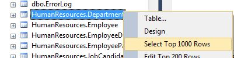
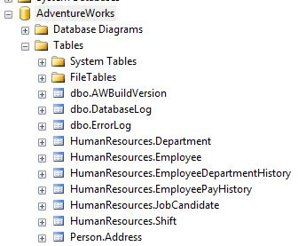

MRRisley:=("Single-Table Queries in T-SQL")
Note: This guide is adapted from Itzik Ben-Gan's T-SQL Fundamentals, 3rd edition.

Back to SQL Main Page
1. Intro to Single-Table Queries
Data within relational databases are stored in tables as observations, or records. Each record has one or more fields, or columns. If you're familiar with Excel Pivot tables, relational data are essentially the original, un-pivoted data. The table excerpt below demonstrates the structure of tables within relational databases.
DepartmentID Name GroupName ModifiedDate ------------ -------------------------------------------------- -------------------------------------------------- ----------------------- 1 Engineering Research and Development 2008-04-30 00:00:00.000 2 Tool Design Research and Development 2008-04-30 00:00:00.000 3 Sales Sales and Marketing 2008-04-30 00:00:00.000 4 Marketing Sales and Marketing 2008-04-30 00:00:00.000 5 Purchasing Inventory Management 2008-04-30 00:00:00.000 ...
Single-table queries are the foundation of SQL. A single-table query is simply what it says: a query on a single table. A query is (usually) a small program that specifies what to return from a table. Queries can "filter" results, they can aggregate results, and they can sort them. Imagine you work at a bank and have a table with checking accounts. You want to return checking accounts that are inactive. A pseudo-query may look like:
select account#
from checkingaccountdata
where status = 'inactive'
The query can be read as follows: select the account# field from the checkingaccountdata table
for all records where another field, status, is equal to "inactive". Note that SQL is NOT case sensitive. It does not
care whether you capitalize or not. This is not true for all programming languages, however.
2. The SELECT Statement
The SELECT statement is the mother of all statements. The base requirement for a query is the SELECT statement. As shown above,
this statement essentially tells the server precisely what you want to see. Without it, there is no query.
Because the SELECT statement is the only required piece of a query, all other components are usually referred to as clauses,
which are simply qualifiactions to the statement. Telling the statement what table to look at and how to look at it are common clauses--so common, in fact, that
the distinction between the SELECT statement and the FROM clause is mostly a semantic issue.
I have only used the SELECT statement by itself in practice to perform basic operations. Unlike some programming languages, such as R or Excel VBA,
SQL does not have a "console," which is essentially a command line. In other languages, this is where you could easily and quickly return a result, such as the
square root of 898. Without a console, the code must be written within the script:
select sqrt(898)
Note that these kind of operations in SQL are usually much more difficult to program than simply arriving at the answer using a calculator. This is due to a number of reasons, such as T-SQL not supporting complex numbers as well as floating-point precision. For example,
select 50/100
returns 1. This is because SQL reads 50 and 100 as integers and returns the nearest integer (i.e., 0.5 gets rounded to 1). For issues related to floating-point precision and numeric values, see a description of numeric variables in programming.
Most applications of the SELECT statement will include use of a table. From a table, the statement will usually refer to fields, aggregations of fields,
or manipulations of existing fields.
select name,
groupname,
modifieddate
from adventureworks.humanresources.department
This query returns the table shown above. One important point about this and all queries: just as SQL does not care about case (i.e. capitalization), it also does not care about line breaks. I have never heard of "rules" for when to break lines with SQL. Generally, however, as you become more comfortable with programming in T-SQL you should code in a way that promotes readability as well as consistency. The code below will work just as well as the code above, but it's not nearly as readable:
select
name, groupname
,modifieddate
from
adventureworks.humanresources.department
SELECT *
To return the complete contents of a table, you can simply use the SELECT * statement on a table.
The query below also returns the table shown above because all fields were selected in the original query.
select *
from adventureworks.humanresources.department
This is a mostly useful statement in practice; however, it should not be used indiscriminantly. It is generally useful
because when you enter a server used in the real world, it is likely that there will be many, many databases and many tables.
The process of learning what is in them (fields and types of data) requires a query in most cases. However, if you don't understand
the size or the structure of a table, using SELECT * could very well initiate a query that takes hours if the table is large enough.
In practice, I have found the act of stopping a query (sometimes referred to casually as "killing" the query) easy enough to do in
SQL Server Management Studio. I have found it to lock up other programs such as SQL Developer. If you ever have a query that
continues to run for a while (referred to casually as a query that's "spinning"), you can cancel it in SSMS by pressing the red "Stop"
button:
There are two options I tend to prefer if I don't know the size of the table, or if there is risk that a SELECT * will
take time to complete:
- Use
SELECT TOP 10 *, which will return the top 10 records. You can change the number 10 to any number you prefer. Also, if your query is written with logic that filters results, only the top 10 records that meet the filtering criteria will be displayed. Note: the TOP keyword does not exist in PL/SQL. - Right-click on a table in the Object Explorer, and select "Select Top 1000 Rows." A query is then self-generated. The benefit of this option is that for a table with many columns, reading the fields is much easier. You can also copy/paste field names or the table name.
select top 10 *
from adventureworks.person.address
returns:
AddressID AddressLine1 AddressLine2 City StateProvinceID PostalCode SpatialLocation rowguid ModifiedDate ----------- ------------------------------------------------------------ ------------------------------------------------------------ ------------------------------ --------------- --------------- ---------------------------------------------------------------------------------------------------------------------------------------------------------------------------------------------------------------------------------------------------------------- ------------------------------------ ----------------------- 1 1970 Napa Ct. NULL Bothell 79 98011 0xE6100000010CAE8BFC28BCE4474067A89189898A5EC0 9AADCB0D-36CF-483F-84D8-585C2D4EC6E9 2007-12-04 00:00:00.000 2 9833 Mt. Dias Blv. NULL Bothell 79 98011 0xE6100000010CD6FA851AE6D74740BC262A0A03905EC0 32A54B9E-E034-4BFB-B573-A71CDE60D8C0 2008-11-30 00:00:00.000 3 7484 Roundtree Drive NULL Bothell 79 98011 0xE6100000010C18E304C4ADE14740DA930C7893915EC0 4C506923-6D1B-452C-A07C-BAA6F5B142A4 2013-03-07 00:00:00.000 4 9539 Glenside Dr NULL Bothell 79 98011 0xE6100000010C813A0D5F9FDE474011A5C28A7C955EC0 E5946C78-4BCC-477F-9FA1-CC09DE16A880 2009-02-03 00:00:00.000 5 1226 Shoe St. NULL Bothell 79 98011 0xE6100000010C61C64D8ABBD94740C460EA3FD8855EC0 FBAFF937-4A97-4AF0-81FD-B849900E9BB0 2008-12-19 00:00:00.000 6 1399 Firestone Drive NULL Bothell 79 98011 0xE6100000010CE0B4E50458DA47402F12A5F80C975EC0 FEBF8191-9804-44C8-877A-33FDE94F0075 2009-02-13 00:00:00.000 7 5672 Hale Dr. NULL Bothell 79 98011 0xE6100000010C18E304C4ADE1474011A5C28A7C955EC0 0175A174-6C34-4D41-B3C1-4419CD6A0446 2009-12-11 00:00:00.000 8 6387 Scenic Avenue NULL Bothell 79 98011 0xE6100000010C0029A5D93BDF4740E248962FD5975EC0 3715E813-4DCA-49E0-8F1C-31857D21F269 2008-12-17 00:00:00.000 9 8713 Yosemite Ct. NULL Bothell 79 98011 0xE6100000010C6A80AD742DDC4740851574F7198C5EC0 268AF621-76D7-4C78-9441-144FD139821A 2012-05-30 00:00:00.000 10 250 Race Court NULL Bothell 79 98011 0xE6100000010C219D64AE1FE4474040862564B7825EC0 0B6B739D-8EB6-4378-8D55-FE196AF34C04 2008-12-02 00:00:00.000 (10 row(s) affected)

Once selected, SSMS returns the following code:
/****** Script for SelectTopNRows command from SSMS ******/
SELECT TOP 1000 [DepartmentID]
,[Name]
,[GroupName]
,[ModifiedDate]
FROM [AdventureWorks].[HumanResources].[Department]
3. The FROM clause
The FROM clause is such a common feature in SQL that it may as well be considered as its own statement rather
than a "clause." But because the SELECT statement can stand on its own,
anything that provides specificity to the SELECT statement is considered a clause.
The FROM clause simply points to a table or a view. It comes after and always directly after the
SELECT statement. We've already seen it used in this way in the examples above.
There is a specific syntax to table/view names. If you're familiar with the . in VBA, you'll recognize the way a table is referred to. In VBA, the period allows you to navigate down a hierarchy. So, you start with the highest level first, then the next highest, and so on. For a table or a view (and also a function), the full qualification is:
[server name].[database name].[schema name].[table/view name]
Since I used brackets, I may as well explain them here. SSMS allows the use of special characters and keywords in naming fields, tables, etc. In all programming languages I know of, a space " " is not permitted in variable naming conventions. It is a special character, and all programs have rules to handle special characters. Typically programmers (myself included) are used to this and avoid spaces altogether. But, you don't have to in T-SQL. Brackets are designed to tell the program to interpret the character only as a character. This is called "escaping" a special character. In the example above, the forward slash, "/", is also a special character.
For keywords, T-SQL also allows you to use them as names so long as they're enclosed in brackets. For example, you can name a field "year" even though it is also a function that will return the year of a date. The rule is: if you use a special character or a keyword, you must use brackets. If you don't, you don't have to use brackets. By default, a query generated by SSMS will use brackets for everything. I tend to view these as a hindrance and only use them when necessary.
[server name].[database name].[schema name].[table/view name]
and
server_name.database_name.schema_name.table_view_name
and
server_name.[database_name].schema_name.[table/view name]
are all acceptable.
The server stores databases, and databases store tables/views assigned to a schema. Schemas can be used for a number of
reasons, and it's mostly an organizational/grouping framework. Some companies may assign a group its own schema within a
database, which becomes more relevant and even necessary if the group is creating their own tables or curating their own
data. The default schema within SSMS is dbo.
Databases can have more schemas than dbo. In the example below, HumanResources and
Person are also schemas within the AdventureWorks database.

Deciding when and when you do not have to use all pieces of the table name shown above can be a bit tricky to first-time SSMS users. You can only remove elements from the fully qualified table name above starting with the server and working toward the table/view. For example, you cannot specify the database name and simultaneously omit the schema name. The following rules will help on when you can drop elements of the fully qualified table name:
- You only need to refer to the server name if you are querying a server other than the one your query script is connected to. In this course, we only work within a single local server. However, if we were connected to a server other than this, a query would have to include the server name:
- If you don't have to refer to the server name, you only need to refer to the database name if you are querying a database other than the one your query script is connected to.
- If you don't have to refer to the server name and the database name,
you only need to refer to a schema name if the schema is not
dbo. When connected to the AdventureWorks database:
select *
from
[T530-PC\SQLEXPRESS].adventureworks.person.address
In this example, [T530-PC\SQLEXPRESS] is the name of my own local server instance. Notice that I
use the brackets with the server name due to the "-" and "\" special characters. Without it:
select *
from
T530-PC\SQLEXPRESS.adventureworks.person.address
returns an error:
Msg 102, Level 15, State 1, Line 3
Incorrect syntax near '-'.
select top 10 *
from AWBuildVersion
returns the first ten records in dbo.AWBuildVersion while the following code returns an error because
the Person schema that contains the Address table is not specified.
select top 10 *
from [Address]
I tend to use the [database name].[schema name].[table/view name] qualification so that I can work within
a server without having to change my connection in the query script. I only refer to the server name when necessary. As
Itzik Ben-Gan points out, this also has the benefit of reducing the "load" of the query. In other words, it makes the
query more efficient. In general, fully qualified logic and references generate more effecient queries.
4. Clauses
As mentioned above, a clause is simply a modification of the SELECT statement. There are four principal clauses
in SQL outside of the FROM clause:
- The
WHEREclause is usually required for nearly every query. This specifies which records to include or exclude on a record-by-record basis. Rarely does a real-life table include the data exactly as you require it. - The
GROUP BYis required when you aggregate date. For example, if revenue posts daily to a general ledger, the revenue for a given month would be the sum of revenue grouped by month. - The
HAVINGclause is utilized in conjunction with theGROUP BYclause. This specifies which records to include or exclude on a grouped basis. It is aWHEREclause for groups. - The
ORDER BYclause is the simplest to understand. It specifies the sort order of the results and can include several sort levels.
a. WHERE clause
The WHERE clause is one of the primary places that introduces logic into the
query. You can think of the WHERE clause as a query filter. For example, you may only need records from the prior month, or you may only need
active accounts. You may also be working on a project that focuses on a segment of data rather than the entire population.
The WHERE clause always comes directly after the
FROM clause. It is then followed by logic statements that use operators.
SQL-specific logic operators are described below.
Consider the query below:
select *
from adventureworks.humanresources.department
where departmentid = 4
The query can be read as "return all records from the table where the DepartmentID is equal to 4. As shown below, the query returns one
record where this is true.
DepartmentID Name GroupName ModifiedDate ------------ -------------------------------------------------- -------------------------------------------------- ----------------------- 4 Marketing Sales and Marketing 2008-04-30 00:00:00.000 (1 row(s) affected)
If there were more than one record that satisfied the criteria, those records would also be returned. For example, in another table,
HumanResources.EmployeeDepartmentHistory, the same logic returns 10 records.
select *
from adventureworks.humanresources.employeedepartmenthistory
where departmentid = 4
BusinessEntityID DepartmentID ShiftID StartDate EndDate ModifiedDate ---------------- ------------ ------- ---------- ---------- ----------------------- 16 4 1 2009-07-15 NULL 2009-07-14 00:00:00.000 17 4 1 2007-01-26 NULL 2007-01-25 00:00:00.000 18 4 1 2011-02-07 NULL 2011-02-06 00:00:00.000 19 4 1 2011-02-14 NULL 2011-02-13 00:00:00.000 20 4 1 2011-01-07 NULL 2011-01-06 00:00:00.000 21 4 1 2009-03-02 NULL 2009-03-01 00:00:00.000 22 4 1 2008-12-12 NULL 2008-12-11 00:00:00.000 23 4 1 2009-01-12 NULL 2009-01-11 00:00:00.000 24 4 1 2009-01-18 NULL 2009-01-17 00:00:00.000 250 4 1 2011-02-25 2011-07-30 2011-07-28 00:00:00.000 (10 row(s) affected)
As with all logic, you can create compound conditions uses the AND or OR operators. The query
below returns the 6 records from the 10 above because both DepartmentID is equal to 4 and
BusinessEntityID is greater than or equal to ( >= ) 20.
select *
from adventureworks.humanresources.employeedepartmenthistory
where departmentid = 4
and businessentityid >= 20
BusinessEntityID DepartmentID ShiftID StartDate EndDate ModifiedDate ---------------- ------------ ------- ---------- ---------- ----------------------- 20 4 1 2011-01-07 NULL 2011-01-06 00:00:00.000 21 4 1 2009-03-02 NULL 2009-03-01 00:00:00.000 22 4 1 2008-12-12 NULL 2008-12-11 00:00:00.000 23 4 1 2009-01-12 NULL 2009-01-11 00:00:00.000 24 4 1 2009-01-18 NULL 2009-01-17 00:00:00.000 250 4 1 2011-02-25 2011-07-30 2011-07-28 00:00:00.000 (6 row(s) affected)
b. GROUP BY clause
The GROUP BY clause was one of the more difficult clauses for me to learn.
This clause is required if you perform a function on a field across another field or fields.
This could mean:
- summing revenue by month
- counting records by geographical region
- finding a minimum/maximum transaction for each customer
The GROUP BY clause always comes directly after the
WHERE clause. If there is no WHERE clause, it always comes directly after the
FROM clause. It is then followed by the field(s) across which you are performing a function.
The COUNT() function is probably the easiest way to understand the GROUP BY clause.
It simply returns a count of what is included between the parentheses. Unless you are a SQL power user, your use of this
function will mostly be limited to COUNT(*). Notice the use of the asterisk, *, which we saw
with SELECT * above. The asterisk in SQL simply stands for "record." So you can interpret SELECT *
as "return all records" (which also means all fields) and COUNT(*) as "count all records."
Let's start with an example that doesn't require a GROUP BY clause:
select count(*)
from adventureworks.person.address
----------- 19614 (1 row(s) affected)
The result tells us there are 19,614 records in this table.
Notice that we performed a function, COUNT(), but did not use a GROUP BY clause. Why? Because
we did not perform the function across another field. If we wanted to count the number of persons by the field
city, we would include "city" in the SELECT list in addition to COUNT(*),
and we would also include the GROUP BY clause after the FROM clause.
select count(*), city
from adventureworks.person.address
group by city
city
----------- ------------------------------
55 Cheltenham
1 Kingsport
31 Suresnes
1 Baltimore
31 Reading
1 Fontana
...
(575 row(s) affected)
Notice that the first column in the results has no field name. Within the grid displayed in SSMS when you run a query,
this column will show (No column name). This is because the COUNT(*) item in the SELECT list
is not a field within the table. There are several ways to name a field in the results, but placing the
name for the field within single-quotation marks after the item works as well as any other method. You can also change default field
names this way.
select count(*) 'Count', city 'City of Record'
from adventureworks.person.address
group by city
Count City of Record ----------- ------------------------------ 55 Cheltenham 1 Kingsport 31 Suresnes 1 Baltimore 31 Reading ... (575 row(s) affected)
One important note: these field names do not exist until after the query is returned. Therefore, the following code returns an error (notice the use of brackets to incorporate the special character of a blank space).
select count(*) 'Count', city 'City of Record'
from adventureworks.person.address
group by [City of Record]
Msg 207, Level 16, State 1, Line 3 Invalid column name 'City of Record'.
The message is straightforward enough, but don't confuse it with a typo: when the query is compiled, it cannot find this field in the original table, which is what it is searching for in this instance.
Finally, if you perform a function across multiple fields, you will need these fields represented in the GROUP BY
clause. For me, this is where things probably became frustrating when learning SQL. Think of the example above where we returned the
counts of persons (records) for each city name. Say that we want the State info as well, which in this table is stored as an identifier in
the field StateProvinceID. It is logical to think that every city will have a single state associated with it. You may add this
field to the query and not realize you need the field in the GROUP BY clause as well:
select count(*) 'Count', city, stateprovinceid
from adventureworks.person.address
group by city
Thankfully, SSMS returns an error message that is interpretable. I don't recall this being the case with SQL Developer.
Msg 8120, Level 16, State 1, Line 1 Column 'adventureworks.person.address.StateProvinceID' is invalid in the select list because it is not contained in either an aggregate function or the GROUP BY clause.
The error message tells us we either need to aggregate StateProvinceID (which doesn't make sense in this instance) or put it in the GROUP BY clause.
In this case, including it in the clause will return the result without error. Why is including it here necessary if every city has a single state/province? SQL certainly doesn't
know that this is the case. You also may not have realized that the same city name can exist in two or more states/regions. For example, there is a city "Paris" in Kentucky, Texas, Tennessee, Illinois, and of course, France.
If a city were to have more than one state, SQL would fail without the grouping by state, which is why it doesn't even allow it to occur in the first place.
Therefore, even if the addition of another field does not result in another record, it is still required in the GROUP BY clause.
c. HAVING clause
The HAVING clause is conceptually similar to the WHERE clause. However,
the WHERE clause only applies to indiviual records. The HAVING clause, on the other hand, is
utilized for groupings (i.e., function(s) performed across one or more fields). Therefore, you will
only use the HAVING clause in conjunction with a GROUP BY clause when you
want to filter the grouped results. The HAVING clause follows the GROUP BY clause.
What does this mean in practice? I find the HAVING clause useful in the following two cases:
- Finding if duplicate records exist.
- Excluding inconsequential records (or including the consequential ones).
- Only including customers with high spending (e.g., a
SUM>across all transactions in a month that is greater than $5,000). - Excluding records whose aggregated field is zero or some other value of interest.
(e.g., a
SUM>of credit inquiries in a year that is equal to zero). - Including only the tails of distributions by using the
ANDoperator. - Least to greatest, which is called ascending order. This is the default sort order in SQL.
- Greatest to least, which is called descending order. If you use this sort method, you must also
use the
desckeyword after the field name. "desc" is short for descending.
Referred to casually as "dups" (pronounced dupes), duplicate records are not at all uncommon in the real world, but they usually require some sort of cleaning. For one reason or another, and usually for a good reason, the same account number may exist in a database twice or more. However, it is impossible for two identical accounts to exist in practice--they always represent a single account. For example, imagine you share a checking account with your spouse. Two records for the account number may exist in a database, each with a different name on the account:
acct_number owner 0006678 Ashley Jackson 0006678 John Jackson ...
In this example, it is more likely you'd need to answer the question, "How many accounts do I have?" and not "How many account owners do I have?" Duplicate records would overstate the answer to this question if not properly handled
The table [AdventureWorks].[Person].[EmailAddress] has a field EmailAddress with email addresses
registered to the adventure-works.com domain. This table has 19,972 records. A query can quickly tell us whether there are
more than one record with the same email address:
select count(*) 'Count', emailaddress
from [AdventureWorks].[Person].[EmailAddress]
group by emailaddress
having count(*) > 1
There are no records with the same email address, as shown in the results below. However, this assumes all email addresses
are correctly spelled, etc., because the field EmailAddress will only be grouped when two records are identical.
SQL would count "jack.johnson@gmail.com" and "jackjohnson@gmail.com" as separate email addresses even though they are highly
similar.
Count emailaddress ----------- -------------------------------------------------- (0 row(s) affected)
I've found the HAVING clause useful in my work for limiting results to those that
are influential. For example, say you have a database of all vehicles registered in the US and you wanted
to count them by make (so, General Motors, Ford, Honda, etc.). You're analyzing the popularity of vehicle makes,
in which case it may be desirable to eliminate makes that don't have a lot of registered owners: the Ferraris,
the Smart cars, the Teslas. The HAVING clause can specify to return makes only when there are over one
million registered owners, for example. In general, I find the HAVING clause most useful when there
are a lot of results are irrelevant to the analytical question you're trying to answer. This could also
be expanded to other applications:
In the GROUP BY section above, we showed the necessity of including the StateProvinceID field in the
GROUP BY if it is contained in the SELECT list:
select count(*) 'Count', city, stateprovinceid
from adventureworks.person.address
group by city, stateprovinceid
This ensures that if a city exists in two or more separate states/provinces, a result will be returned for each city and state/province. Imagine our analysis wanted to explore cases when only a single person is registered in a city. Our query would look like:
select count(*) 'Count', city, stateprovinceid
from adventureworks.person.address
group by city, stateprovinceid
having count(*) > 1
There are 253 records where only one record exists for a distinct city and state/province combination.
Count city stateprovinceid ----------- ------------------------------ --------------- 1 Tupelo 39 1 Michigan City 25 1 Norridge 24 1 Monroe 35 1 Stamford 11
d. ORDER BY clause
The ORDER BY clause is the simplest of the clauses in my opinion. The ORDER BY clause tells
SQL how to order, or sort, the results. Nearly everyone is familiar with sorting data as this is a common way to
add interpretability to numbers and is usually a first step in exploratory analysis. The ORDER BY list
can sort by one or more fields from:
Let's start with a simple query. The [AdventureWorks].[Production].[Product] table contains information for
various products, including weight. The first result in the following query tells us which product has the lowest weight.
Remember that the default order is ascending, and this query does not use the desc keyword.
select productid
FROM [AdventureWorks].[Production].[Product]
order by weight
productid ----------- 1 2 3 4 316 ... (504 row(s) affected)
Of the 504 products in the table, the product with an ID of 1 is the product with the lowest weight. Or, this appears to be
the case. However, the results of the query don't provide any check to ensure the query performed as intended. We can add the weight
field to also show the corresponding weight of each ProductID
select productid
from [AdventureWorks].[Production].[Product]
order by weight
productid weight ----------- --------------------------------------- 1 NULL 2 NULL 3 NULL 4 NULL 316 NULL ... (504 row(s) affected)
This is a great example for the necessity of performing checks during analytic work. When sorting fields with the ORDER BY
clause, NULL values are returned first for ascending sorts (and last for descending sorts). Imagine if you ran the query, which seemed
appropriate, but you told your manager that ProductID 1 had the lowest weight. The manager then makes a decision based on this information,
which is most likely bad information. Within the table, the NULL values for weight tell us that the WEIGHT field
is "missing" for these products. Occassionally NULL values are intentional, but in other cases they may reveal incomplete information.
So what should you tell your manager in this instance? The fact is that, in the presence of NULL values, answers to questions about weight
across all products are uknowable without understanding better the rationale and interpretation of the NULL values. This is also
why summary statistics on your data are a good first step before drawing conclusions from it.
Imagine that your manager tells you that you can simply ignore these NULL values, referred to casually in the coding community as "nulls".
How could we write a query to ensure that NULL values for the WEIGHT field are not displayed? With the WHERE clause:
select productid, weight
from [AdventureWorks].[Production].[Product]
where weight is not null
order by weight
productid weight ----------- --------------------------------------- 718 2.12 838 2.12 839 2.16 719 2.16 822 2.18 ... (205 row(s) affected)
NULL and IS are both keywords in T-SQL, which we will cover in another section. From the results, we can determine that there are
also quite a few nulls (299 out of 504) for the WEIGHT field.
Like most programming languages, SQL does allow sorting of character data, which relies on alphabetical order. Ascending sorts (the default) are from A-Z
and descending (with the desc keyword ) are from Z-A.
To sort store names (name) within the [AdventureWorks].[Sales].[Store] table in reverse alphabetical order (that is, from Z-A)
and return the first five records::
select top 5 name
from [AdventureWorks].[Sales].[Store]
order by name desc
name -------------------------------------------------- Yellow Bicycle Company Year-Round Sports Worthwhile Activity Store World of Bikes World Bike Discount Store (5 row(s) affected)
Sorting by more than one field is referred to as a "multi-level" sort. This is most useful for character fields. Think of a table with the genus and species of trees from Ohio. Because genus refers to a group of species that share like characteristics, there will likely be multiple species for a particular genus. For Maple trees, there are Red Maple, Black Maple, Sugar Maple, .... (see this link if you're curious about this). For Oak trees, there are similarly many types. A list that's sorted A-Z on genus but not species may look something like:
genus species --------------- ---------------------------------- Acer nigrum Acer rubrum Acer saccharum Acer platanoides ... Quercus velutina Quercus coccinea ...
A multi-level sort (both ascending) on genus and species would look like the following, which makes the data more readable, especially when these lists are expanded.
genus species --------------- ---------------------------------- Acer nigrum Acer platanoides Acer rubrum Acer saccharum ... Quercus coccinea Quercus velutina ...
The code below demonstrates a multi-level sort within a query on the [AdventureWorks].[Person].[StateProvince] for the fields
TerritoryID (descending), CountryRegionCode, and StateProvinceCode
select territoryid,
countryregioncode,
stateprovincecode
from [AdventureWorks].[Person].[StateProvince]
order by
territoryid desc,
countryregioncode,
stateprovincecode
territoryid countryregioncode stateprovincecode ----------- ----------------- ----------------- 10 GB ENG 9 AU NSW 9 AU QLD 9 AU SA 9 AU TAS 9 AU VIC 9 FM FM 9 MH MH 9 MP MP 9 PW PW 8 DE BB 8 DE BY 8 DE HE 8 DE HH 8 DE NW 8 DE SL 8 DE SN ... (181 row(s) affected)